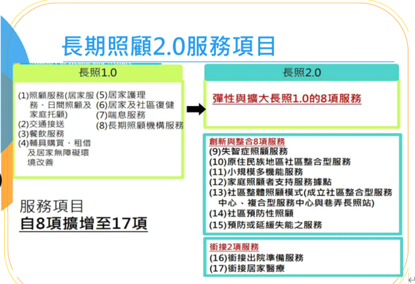
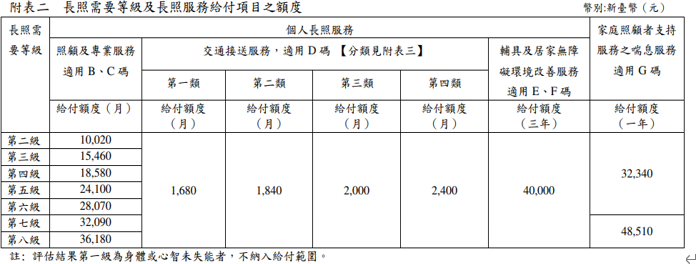

Development Diary
[!TIP]
- 如有任何問題, 請寫信至support@kiiruei.studio, 將儘快回覆您的問題
- 目前不支援中文字的搜尋功能
- performance is design
- 期待用最小的資源, 完成各種解決方案
2026.04.07
- 這段時間換工作, 忙碌, 重新開始更新內容
- 增加Clang頁籤
- 照專項目關閉
2025.09.11
- 用wasm的方法, 做一個台灣身份證驗證的頁面
- 增加練習演算法的頁籤紀錄
2025.07.31
- 增加長照個案管理工具
- 增加側欄項目
2025.07.28
- 更新網站, 整合最近架設的服務
- 測試線上報告上線, 持續修正
2025.07.20
- 調整mx record, 讓admin能順利收發信件
- 增加兩項web service
2025.07.01
- 調整視覺設計
- 調整字型, 讓繁體中文在視覺上容易閱讀
- 增加不同效果的渲染模組
- 增加長照項目的內容
2025.06.24
- 架設網站, 使用rust的mdbook
2025.05.02
- Setting server, 防火牆等
- 處理DOS攻擊問題
長照2.0服務項目

-
長照1.0
- 照顧服務-轉跳到該章節
- 居服
- 日照
- 家托
- 交通接送
- 餐飲服務
- 輔具購買. 租借及居家無障礙設施
- 居家護理
- 居家及社區復健
- 喘息服務
- 長照機構服務
- 照顧服務-轉跳到該章節
長照2.0增加及整合長照1.0的服務
-
長照2.0
- 失智症照顧
- 原住民地區社區整合服務
- 小規模多機能服務
- 家庭支持服務據點
- 社區整合照顧模式
- 成立社區整合服務中心
- 複合性服務中心
- 巷弄長照站
- 社區預防照顧
- 預防或延緩失能之服務
- 出備服務(出院準備)
- 銜接居家醫療
給付額度及負擔比率

給付額度計算單位
照顧與專業服務與交通接送以月為單位輔具與居家無障礙環境改善服務以3年為單位喘息服務以年為單位
有
外籍看護及領取特照津貼, 僅給付額度的30%, 只能使用專業服務及到宅沐浴車
核定生效給付與留用規則
留用額度六個月為一期(系統有底色區分), 僅有照顧服務, 專業服務, 交通接送有留用
- 核定等級提高
- 給付額度回朔當月1日生效
- 留用額度保留到當月底
- 核定等級降低
- 給付額度次月1日生效
- 留用額度保留到核定前一日為止
AA碼: 給長照服務單位的加給
AA碼不扣長照給付額度也不用部份負擔
- AA01- A單位家訪 1700元
- AA02- A單位電訪 400元
- AA12- 開立醫師意見書 居家失能個案家庭醫師照護方案
- 半年醫師家訪一次, 該單位每個月電訪一次
- AA08- 晚間服務(2000-0000)
- AA09- 假日服務
- 照專要勾選, 服務單位才能申請
同日AA08及AA09不能同時申請
照顧服務
主管機關為台北市社會局老人福利科, BD01-BD03是給日照中心及家托單位之補助; BD03是補助接送個案居家到其他長照服務據點(含輔具中心)
照顧服務含:
居家服務BA
BA01-BA24, 居家照顧服務員固定時間到案家提供身體照顧，任務制，做完就會離開(無法整天，僅能提供部分時段，如有整天需求，可參考-多元陪伴照顧服務試辦計畫
BA01 - 身體清潔
- 這不是BA07洗澡
- 1天可2組, 不可連續(早晚使用)
- 床上擦澡
BA02 - 基本照顧
1/30mins, 限制3hrs
- 穿脫衣服等日常起居, 可和BA20 陪伴並用
- 協助翻身
- 移位
- 上下床
- 坐下
- 離座
- 刷牙洗臉, 洗手, 刮鬍子, 修剪指甲, 協助用藥, 服藥, 整理床, 更換床單,
- 穿脫衣服
- 如廁
- 更換尿片或衛生棉
- 倒尿桶
- 清洗便桶
- 造廔袋清理
- 或相關協助
BA03 - 量測vital sign
- 因
疾病需求的量測, 如果是洗澡前為了安全的理由不適用
BA04 - 協助進食, 管灌
進食的動作- 訂外送, 免備餐僅進食
- 單純加熱
BA05 - 餐食
- 從生煮到熟的過程
BA07 - 洗澡洗頭
BA08 - 足部照顧
- 要考證照
- DM
- 問題指甲, 厚指甲
- 龜裂
三個都有才算
BA09 - 到宅沐浴車
BA09a - 有留置管沐浴車
- 有護士評估vital sign
BA10 - 翻身拍背
- 有操作指引(約15mins)
BA11 - ROM
- 主動or被動
- 有操作指引
- 不會連續操作(間斷如2hrs可核定)
BA12 - 協助上下樓梯
- 上下樓梯都算一次
BA13 - 陪同外出
- 1/30mins
- 洗腎, "接"和"送", 定期復健可申請
BA14 - 陪同就醫
- 1.5hrs內, 超過的話並用BA13
BA15 - 家務協助
- 1/30mins
BA 16 - 代購
- 5km以內
BA 18 - 安全看視
- 限心智障礙者
BA 20 - 陪伴
- 1支/30mins
BA 23 - 洗頭
BA 24 - 協助排泄
- 含腸造口更換(不含底座更換)
參考-多元陪伴照顧服務試辦計畫
2025.7.2更新

- 服務對象:
- 時效內的身障證明
- 重大傷病
- 三個月內就醫或手術紀錄
- 有看護的被照顧者
- 長照失能等級2-8
為回應民眾「臨短急」服務需求，包括長輩「臨」時有狀況卻找不到服務人力、外籍家庭看護空窗期的「短」期需要服務人力、家人手術或病後需要「急」性後期服務等，勞動部推動「多元陪伴照顧服務試辦計畫」，由依法設立滿五年之財團法人或非營利社團法人，並通過公益性、專業度與合理收費等評選標準後成為試辦單位，聘僱及培訓本國籍及外國籍多元陪伴照顧服務工作者到申請服務家庭，提供基本日常生活服務、陪同外出、陪同就醫、安全陪伴等多元陪伴照顧服務 。「陪伴照顧服務工作者」之給薪與休息時間，依勞動基準法規定辦理。
本項服務由民眾全額自費，各試辦單位得提供單次至少四小時以上或全日等彈性服務，並依勞動部核定之服務價格收費。
日間照顧BB
照專行政解決方案
線上資料庫平台
職護解決方案
詳見github
(實際執行於5000+人食品企業, 分散式營業管理, 3個護理師, 一年)
雲端服務
記帳服務
台灣身份證驗證
-
使用rust, cargo add wasm-bindgen
-
工具: cargo install wasm-pack
-
詳細程式內容 => 程式碼, API及相關文件
演算法(algorithms)研究
performance is design
演算法個人認為, 是一種學習如何"設計最有效率決策"的技術, 可以在使用AI做出大部分架構與解決方案後, 再次做優化與改善. 是綜合能力, 也是思維底層核心重要的價值之一.
準備一個自己比較熟悉的程式語言, 開始探討演算法...
為了練習思考邏輯, 會使用三種不同類型的程式語言當作練習...
- powershell: 物件導向的shell + 腳本語言 for .NET生態
- bash: 文字導向的shell + 腳本語言 for unix生態
- rust: 系統級別語言
下面嘗試練習幾個範例看自己受不受的了...
插入排序
輸入 -> n個數字
輸出 -> 重新排序$a_1 \leq a_2 \leq a_3 \leq ... \leq a_n$
使用bubble sort
物件導向語言練習(powershell)
cls
$a = (2,6,8,12,77,99)
#Setting bubble sort loop
for ($i = 0; $i -lt $a.length; $i++) {
for ($j = 0; $j -lt $a.length - 1 - $i; $j++) {
#比大小
if ($a[$j] -gt $a[$j + 1]) {
$temp = $a[$j]
$a[$j] = $a[$j + 1]
$a[$j + 1] = $temp
}
}
}
Write-Host ($a -join "->")
文字導向的語言練習(bash)
#!/bin/bash
arr=(2 6 88 98 333 999)
len=${#arr[@]}
# outer loop and inner loop
for ((i=0; i<len; i++)); do
for ((j=0; j<len-1-i; j++ )); do
if ((arr[j] > arr[j+1])); then
temp=${arr[j]}
arr[j]=${arr[j+1]}
arr[j+1]=$temp
fi
done
done
echo "${arr[@]}"
現代語言練習(Rust)
use std::io; fn bubble_sort (arr: &mut Vec<u16>) { let n = arr.len(); if n < 2 {return;} //1個不用排序 for i in 0..n { let mut sw = false; //檢查是否不用交換 for j in 0..(n -1 -i) { if arr[j] > arr[j + 1] { arr.swap(j, j + 1); sw = true; } } if !sw {break;} } } fn main () { let mut a = vec![1, 2, 55, 77, 123, 999, 5]; bubble_sort(&mut a); println!("排序結果:{:?}", a); // 把結果放在terminal println!("按Enter退出..."); let mut enter = String::new(); io::stdin().read_line(&mut enter).unwrap(); }
加總
輸入 -> 給一個數字陣列
輸出 -> 加總
powershell練習(含命令列操作)
cls
$arr = (2, 4, 6, 8)
$arr2 = (2, 3, 6, 11, 55)
$result = 0
$result2 = 0
for ($i=0; $i -lt $arr.Length; $i++) {
$result += $arr[$i]
}
Write-Host $result
# 用命令列工具
$arr2 | ForEach-Object {$result2 += $_}
Write-Host ""
Write-Host "命令列的方法: $result2"
Bash練習(同樣一般script和命令列兩種方法)
#!/bin/bash
arr=(2 2 3 4 5)
result=0
len=${#arr[@]}
for ((i=0; i<len; i++)); do
((result+=arr[i]))
done
echo "$result"
echo "使用命令列的方式"
echo "${arr[@]}" | tr " " "+" | bc
使用Rust
fn main () { let arr = vec![1, 2, 4, 88]; //vec<T> 在heap上, 可變大小 let mut result = 0; for i in 0..arr.len() { result += arr[i]; } println!("Sum is: {}", result); //iterator方法 let aa = [1, 2, 4, 88]; //一般陣列, 在stack上, 不可變大小 let result2: u8 = aa.iter().sum(); println!("iterator method result: {}", result2); }
線性搜尋test
輸入 -> 陣列有n個數字(a_1, a_2, a_3, ..., a_n), 跟一個值x
輸出 -> 顯示x在陣列中為第i個位置, 如果陣列中沒有x, i 顯示為nil
這邊使用powershell的Pester測試module, 做兩組測試
function find_index {
param (
$array,
$string
)
$index = $null
for ($i=0; $i -lt $array.length; $i++) {
if ($array[$i] -eq $string) {
$index = $i
break
}
}
if ($index -eq $null) {
return "nil"
} else {
return $index + 1
}
}
Describe "測試" {
It "test1" {
$a = (1,2,3,4,5,6,"x",3,4,5,6)
$word = "x"
$result = find_index -array $a -string $word
$result | should Be "7"
}
It "test2" {
$a = (1,2,3,4,5,6,"x",3,4,5,6)
$word = "Z"
$result = find_index -array $a -string $word
$result | should Be "nil"
}
}
文字導向的bash, 寫起來有點痛苦, 因為邏輯不一樣.
主要函數
#!/bin/bash
find_index () {
local target="$1"
shift
local arr=("$@")
local index=-1 # index有找到的話, 輸出都要+1
local i=0
for value in "${arr[@]}"; do
if [[ "$value" == "$target" ]]; then
index=$i
break
fi
((i++))
done
if [[ $index -eq -1 ]]; then
echo "nil"
else
echo $((index+1))
fi
}
測試函數
#!/bin/bash
source ./search.sh
# 測試陣列
arr=(1 2 3 4 5 x 5 6 7 44)
#測試有x
result=$(find_index "x" "${arr[@]}")
if [[ "$result" == "6" ]]; then
echo "test1 passed: $result should be 6"
else
echo "test1 failed: $result should be 6"
fi
#測試無x
result=$(find_index "z" "${arr[@]}")
if [[ "$result" == "nil" ]]; then
echo "test2 passed: $result should be nil"
else
echo "test2 failed: $result should be nil"
fi
rust和測試工具一起練習
fn find_index<T: PartialEq> (array: &[T], x: &T) -> Option<String> { for (i, val) in array.iter().enumerate() { //enum -> (index: usize, value: &T) if val == x { return Some((i+1).to_string()); } } None } fn main() { /* 直接用函數處理 let a = vec!["1","2","6","7","8","4","3","x","2222","333","666"]; let word = "Y"; let result = find_index(&a, &word); println!("{:?}", result.unwrap_or(("nil").to_string())) */ } //用測試的方式 #[cfg(test)] mod tests { use super::*; const A: [&str; 11] = ["1","2","6","7","8","4","3","x","2222","333","666"]; #[test] fn returns_index() { let word = "x"; let result = find_index(&A, &word).unwrap_or(("nil").to_string()); assert_eq!(result, "8"); } #[test] fn returns_nil() { let word = "Z"; let result = find_index(&A, &word).unwrap_or(("nil").to_string()); assert_eq!(result, "nil"); } }
資料結構
單純先研究基礎的資料結構, 要先了解以下定義:
-
array: 有分一維或二維陣列, 資料庫sql或excel很類似這種想法, 資料有分row and column, 可以做搜尋或查找
-
stack: 疊書放在桌上的概念, 後近先出
有反轉順序的特性, insert() 和 pop() 順序相反, 例如回前一個步驟的邏輯實現
- queue: 線性資料, 有head and tail, 雙邊可取資料
既然是結構, 就有空值或上限的問題, 會有取了空值-undefined, 或超出容器大小的問題-overflow
rust對於stack的常用操作:
- new()
- push(item)
- pop()
- delete
- peek()
- 返回上面的資料
- is_empty() -> bool
- 測試是否為空的
- size() -> usize
- 數據的數量
迭代
- iter() -> &T
- 產生一個新的迭代, 但只是參考原本的數據
- iter_mut() -> &mut T
- into_iter() -> T
實際製作這些功能(其實也不是很懂, 而且沒有嚴謹, 只是自己練習做紀錄)
#[derive(Debug)] struct Stack<T> { size: usize, data: Vec<T>, } //做功能 impl<T> Stack<T> { fn new() -> Self { //Self = struct Stack 自己 Self { size: 0, data: Vec::new(), } } fn push(&mut self, val: T) { self.data.push(val); self.size += 1; } fn pop(&mut self) -> Option<T> { if 0 == self.size { return None; } self.size -= 1; self.data.pop() } fn peek(&self) -> Option<&T> { if 0 == self.size { return None; } self.data.get(self.size - 1) } fn is_empty(&self) -> bool { //&self呼叫者本身, 不是保留字 0 == self.size } fn len(&self) -> usize { self.size } fn clear(&mut self) { self.data.clear(); self.size = 0; } // 把下面的迭代功能塞到Stack中 fn into_iter(self) -> IntoIter<T> { IntoIter(self) } fn iter<'a>(&'a self) -> Iter<'a, T> { let mut iterator = Iter { stack: Vec::new() }; for item in self.data.iter() { iterator.stack.push(item); } iterator } fn iter_mut<'a>(&'a mut self) -> IterMut<'a, T> { let mut iterator = IterMut { stack: Vec::new() }; for item in self.data.iter_mut() { iterator.stack.push(item); } iterator } } //三種迭代功能, 多包一層struct, 才不會影響原本的stack資料和所有權 // 1. struct IntoIter<T> (Stack<T>); //直接拿value impl<T: Clone> Iterator for IntoIter<T> { type Item = T; fn next(&mut self) -> Option<Self::Item> { if !self.0.is_empty() { self.0.size -= 1; //self.0 = Stack<T> self.0.data.pop() } else{ None } } } // 2. struct Iter<'a, T: 'a> {stack: Vec<&'a T>, } //只有借用 impl<'a, T> Iterator for Iter<'a, T> { type Item = &'a T; fn next(&mut self) -> Option<Self::Item> { self.stack.pop() } } // 3. struct IterMut<'a, T: 'a> { stack: Vec<&'a mut T>,} impl<'a, T> Iterator for IterMut<'a, T> { type Item = &'a mut T; fn next(&mut self) -> Option<Self::Item> { self.stack.pop() } } fn main() { basic(); peek(); iter(); fn basic() { let mut a = Stack::new(); a.push(1); a.push(2); a.push(3); println!("大小: {}, 結構: {:?}",a.len(), a); } fn peek() { let mut a = Stack::new(); a.push(1); a.push(2); a.push(3); println!("{:?}", a); } fn iter() { let mut a = Stack::new(); a.push(1); a.push(2); a.push(3); let sum1 = a.iter().sum::<i32>(); println!("{}", sum1); } }
字串反轉
rust寫起來很快, 因為函式的處理方式, 有現成工具
fn main() { let s = "我是貓咪"; let test:String = s.chars().rev().collect::<String>(); println!("{}", test); }
powershell_5.1 沒有原生轉換BOM UTF8, 中文字會變亂碼, powershell 7 可以直接處理
Add-Type -AssemblyName System.Windows.Forms
$box = [System.Windows.Forms.OpenFileDialog]::new()
#config setting the box
$box.Title = "選一個要反轉文字的檔案(限txt)"
$box.Filter = "純文字檔(*.txt)|*.txt"
$box.InitialDirectory = $PSScriptRoot
$box.Multiselect = $false
if ($box.ShowDialog() -eq [System.Windows.Forms.DialogResult]::OK) {
$path = $box.FileName
} else {
[System.Windows.Forms.MessageBox]::Show(
"沒有選擇檔案",
"訊息",
[System.Windows.Forms.MessageBoxButtons]::OK,
[System.Windows.Forms.MessageBoxIcon]::Warning
)
exit
}
# 處理後的資料路徑
$dir = [System.IO.Path]::GetDirectoryName($path)
$old_name = [System.IO.Path]::GetFileNameWithoutExtension($path)
$newfile_path = Join-Path -Path $dir ($old_name + "_reverse.txt")
# 匯出反轉資料
Get-Content -Path $path | % { -join ($_.ToCharArray()[-1..-($_.Length)]) } | Set-Content -path $newfile_path -Encoding Default
# 處理好的訊息
[System.Windows.Forms.MessageBox]::Show(
"處理完成, 檔案存在: `n$newfile_path",
"完成",
[System.Windows.Forms.MessageBoxButtons]::OK,
[System.Windows.Forms.MessageBoxIcon]::Information
)
bash 單純用bash的shell, 不使用awk(不然等於又要再學一個語法...)
#!/bin/bash
s='我是貓咪'
r=''
for ((i=${#s}-1; i>=0; i--)); do
r+="${s:i:1}" # ${data:第幾個:範圍}
done
printf '%s \n' "$r" # %s format specifier 格式化後面的輸出
括號配對
利用stack的特性, 有左邊的就丟進去, 遇到右邊的就拿出來配對
rust
fn par_check (s: &str) -> bool { let mut b: Vec<char> = Vec::new(); for g in s.chars() { match g { '(' => b.push('('), ')' => if b.pop().is_none() { return false; }, _ => {} } } b.is_empty() } fn main() { let cases = [ "()", "((())))))", "((()))", "()()()()" ]; for i in cases { println!("{i} => {}", par_check(i)); } }
powershell 解法, 用count
function check {
param([string]$s)
$count = 0
foreach($i in $s.ToCharArray()) {
switch ($i) {
'(' {$count++}
')' {
if ($count -eq 0) { return $false }
$count--
}
}
}
return ($count -eq 0)
}
#test data
$cases = @("()",")(","(())","(((()))))")
$cases | % { "$_ => $(check $_)" }
用bash來解
#!/bin/bash
check () {
local str=$1 # local 這個變數只有在fn裡面有效
local -i depth=0
for ((i=0; i<${#str}; i++)); do
ch=${str:i:1}
if [[ $ch == "(" ]]; then
((depth++))
elif [[ $ch == ")" ]]; then
((depth==0)) && return 1
((depth--))
fi
done
((depth==0))
}
#test
cases=("()" ")(" "(())" "((())" "()()()")
for y in "${cases[@]}"; do
if check "$y"; then
echo "$y => true"
else
echo "$y => false"
fi
done
找兩數和
給一個陣列nums 和 一個 數字target, 從陣列中找到兩個數字加起來等於target, 並輸出兩數在陣列的位置.
例如:
Input: nums = [2,7,11,15], target = 9 Output: [0,1]
因為陣列第一個0和的二個的7相加等於9.
//2.53MB 記憶體 use std::collections::HashMap; pub fn two_sum(nums: Vec<i32>, target: i32) -> Vec<i32> { let mut map = HashMap::new(); for(i, &num) in nums.iter().enumerate() { let complement = target - num; //厲害的地方 if let Some(&j) = map.get(&complement) { //第一次是空的, 所以會直接跳出 return vec![j as i32, i as i32]; } map.insert(num, i); } vec![] } fn main() { let nums: Vec<i32> = vec![3,2,4]; let target: i32 = 6; let result = two_sum(nums, target); println!("{:?}", result); }
上述是用雜湊表的方法, 讓時間複雜度維持O(n), 但資料量很小, 多一個雜湊表記憶體消耗比較大, leedcode顯示這樣寫消耗2.53MB, 用雙loop比較省記憶體
// 2.1MB記憶體 fn double_loop_add_sum (nums: Vec<i32>, target: i32) -> Vec<i32> { let mut result: Vec<i32> =Vec::new(); for i in 0..nums.len() -1 { for j in i + 1 .. nums.len() { if nums[i] + nums[j] == target { result.push(i as i32); result.push(j as i32); return result; } } } result } fn main() { let nums: Vec<i32> = vec![2,3,5,7]; let target: i32 = 8; println!("{:?}", double_loop_add_sum(nums, target)) }
下面用powershell寫一般雙loop的方法
function two_sum {
param (
[int[]]$nums,
[int]$target
)
for ($i = 0; $i -lt $nums.Length; $i++) {
for ($j = $i + 1; $j -lt $nums.Length; $j++) {
if ($nums[$i] + $nums[$j] -eq $target) {
return @($i,$j)
}
}
}
}
#test
$result = two_sum -nums @(2,7,11,15) -target 9
Write-Output $result
這個是雙loop, 時間複雜度O($n^2$), 但很好理解
bash的寫法(同powershell)
#!/bin/bash
nums=(2 7 11 15)
target=9
len=${#nums[@]}
for (( i=0; i<len;i++ )); do
for (( j=i+1; j<len; J++ )); do
sum=$(( nums[i]+nums[j] ))
if [[ $sum -eq $target ]] ; then
echo "$i $j"
exit 0
fi
done
done
Palindrome Number
給一個整數, 判斷是否廻文
用數學解法, 讓空間O(1), 直接複製字串等於要提供兩個string的heap空間
//2.15MB, 1ms pub fn is_palindrome(x: i32) -> bool { //先去掉不可能的情況, 負數, 0結尾, //0結尾, 但不是0本身, 一定不是palindrome if x < 0 || (x % 10 == 0 && x !=0) { return false; } let mut x = x; let mut reverse_half = 0; //等等純數字用, 用stack取代string的heap while x > reverse_half { reverse_half = reverse_half * 10 + x % 10; //原本的數字進位, 加上x最後一位數 x /= 10; //去掉最後一個位數 } x == reverse_half || x == reverse_half / 10 //odd digit, 不用管中間是甚麼 } fn main() { let x: i32 = 12321; println!("{}",is_palindrome(x)); let y: i32 = 10000; print!("{}", is_palindrome(y)); }
rust有trait可以更快, 簡單解這題, zero abstract的代表
// 1.9 memories fn palindrome(x: i32) -> bool { let y = x.to_string(); y.chars().rev().collect::<String>() == y } fn main() { let x = 1234321; println!("{:?}", palindrome(x)); }
powershell version
function test {
param([int]$x)
if ($s -lt 0 -or ($x -ne 0 -and ($x % 10) -eq 0)) {
return false
}
$rev_half = 0
while ($x -gt $rev_half) {
$rev_half = ($rev_half * 10) + ($x % 10)
$x = [int]($x / 10)
}
return (($x -eq $rev_half) -or ($x -eq ($rev_half / 10)))
}
test 12321
bash處理文字比較好, 有rev自帶工具
#!/bin/bash
is_palindrome() {
local x=$1 #指定位置, $0是程式本身
local s="$x"
local rev_int
rev_int=$(echo "$s" | rev)
if [[ "$s" == "$rev_int" ]]; then
echo "true"
else
echo "false"
fi
}
# main function
if [[ $# -eq 0 ]]; then
echo "沒有輸入數字"
exit 1
fi
is_palindrome "$1"
用數學方法
#!/bin/bash
compared() {
local x=$1
if (( x<0 )); then
echo "false"
return
fi
local origin=$x
local reverse=0
while (( x>0 )); do
reverse=$(( reverse*10+x%10 ))
x=$(( x/10 ))
done
if (( origin==reverse )); then
echo "true"
else
echo "false"
fi
}
compared 12321
compared 10
Terminal User Interface框架
使用rust的ratatui + crossterm(底層事件處理)
crossterm::event::
- self : 處理終端事件, 螢幕大小變化, 滑鼠鍵盤, 或是event::read()等待事件, 讀取事件
- Event : 事件enum
- KeyCode : 案件代碼
#![allow(unused)] fn main() { pub enum KeyCode{ Backspace, Enter, Left, Right, Up, Down, Tab, BackTab, Delete, Insert, F(u8) //F1-F12 Char(char), //一般字元 ,asdferwer Null, Esc, } }
- KeyEvent : 單次鍵盤事件
#![allow(unused)] fn main() { Pub struct KeyEvent { pub code: KeyCode, pub modifiers: keyModifiers, //有沒有Ctrl, Alt, Shift pub kind : KeyEventKind, //press,release,repeat pub state : KeyEventState, //numLock, CapsLock 等狀態 } }
- KeyEventKind : 按鍵種類(上述第4點)
- KeyModifiers : 修飾鍵,組合鍵(第4點)
ratatui
- DefaultTerminal : //init視窗必備
- Frame : //畫框必備
- text::Line //文字
- style::Stylize //粗體字等變化調整
- widgets::{ Block, //大框框 Paragraph, //可以寫多行文章 }
最基本的框架元素
use color_eyre::Result; use crossterm::{event::{self,Event, KeyCode, KeyEvent, KeyEventKind, KeyModifiers}}; use ratatui::{ DefaultTerminal, Frame, style::Stylize, text::Line, widgets::{Block, Paragraph}, }; fn main() -> color_eyre::Result<()> { //可接受任何類型的Error color_eyre::install()?; //啟動彩色錯誤處理 let terminal = ratatui::init(); let result = App::new().run(terminal); ratatui::restore(); result } #[derive(Debug,Default)] pub struct App { //程式進入和結束的邏輯 1,0 running: bool, } impl App { pub fn new() -> Self { //初始化 Self::default() } pub fn run(mut self, mut terminal: DefaultTerminal) -> Result<()> { //loop邏輯 self.running = true; while self.running { //如果初始化失敗, 回傳問題 terminal.draw(|frame| self.render(frame))?; self.handle_crossterm_events()?; } Ok(()) } fn render(&mut self, frame: &mut Frame) { //不用pub, 畫布變化 let title = Line::from("我的第一個tui程式") .bold() .blue() .centered(); let text = "第一行文字測試\n\n\ 換兩行到第三行\n\ 然後跟你說Esc, Ctrl-c, q 都可以關閉程式\ "; frame.render_widget( Paragraph::new(text) .block(Block::bordered().title(title)) .centered(), frame.area(), ) } fn handle_crossterm_events(&mut self) -> Result<()> { //key事件處理 match event::read()? { Event::Key(key) if key.kind == KeyEventKind::Press => self.on_key_event(key), Event::Mouse(_) => {} Event::Resize(_,_) => {} _ => {} } Ok(()) } fn on_key_event(&mut self, key: KeyEvent) { //key事件接收 match (key.modifiers, key.code) { (_, KeyCode::Esc | KeyCode::Char('q')) | (KeyModifiers::CONTROL, KeyCode::Char('c') | KeyCode::Char('C')) => self.quit(), _ => {} } } fn quit(&mut self) { self.running = false; } //離開的邏輯 }
心術
心術
作者:蘇洵(西元1009-1066年)
北宋世代的人, 27歲發憤向學, 但應進士不中, 於是閉門苦讀十年. 後來帶著兩個兒子--蘇軾和蘇轍,去拜會當代文壇大老歐陽修, 自己的作品有受到賞識, 經歐陽修推薦, 一時學者競效其文.
有名的是兩個兒子後來同登金榜, 轟動京師. 但這時老婆程氏卻病故. 嘉佑三年(1058年), 宋仁宗召他參加考試, 但他稱病不赴.(此時他48歲左右)
隔兩年, 嘉佑五年(1060年), 經過其他人推薦, 他總算當官(祕書省校書郎), 就是矯正書籍, 寫書的職位.
依照時間序, 工作了6年, 享年58歲於京師病逝.
爲將之道，當先治心。泰山崩於前而色不變，麋鹿興於左而目不瞬，然後可以制利害，可以待敵。
凡兵上義；不義，雖利勿動。非一動之爲利害，而他日將有所不可措手足也。夫惟義可以怒士，士以義怒，可與百戰。
凡戰之道，未戰養其財，將戰養其力，既戰養其氣，既勝養其心。謹烽燧，嚴斥堠，使耕者無所顧忌，所以養其財；豐犒而優遊之，所以養其力；小勝益急，小挫益厲，所以養其氣；用人不盡其所欲爲，所以養其心。故士常蓄其怒、懷其欲而不盡。怒不盡則有餘勇，欲不盡則有餘貪。故雖並天下，而士不厭兵，此黃帝之所以七十戰而兵不殆也。不養其心，一戰而勝，不可用矣。
凡將欲智而嚴，凡士欲愚。智則不可測，嚴則不可犯，故士皆委己而聽命，夫安得不愚？夫惟士愚，而後可與之皆死。
凡兵之動，知敵之主，知敵之將，而後可以動於險。鄧艾縋兵於蜀中，非劉禪之庸，則百萬之師可以坐縛，彼固有所侮而動也。故古之賢將，能以兵嘗敵，而又以敵自嘗，故去就可以決。
凡主將之道，知理而後可以舉兵，知勢而後可以加兵，知節而後可以用兵。知理則不屈，知勢則不沮，知節則不窮。見小利不動，見小患不避，小利小患，不足以辱吾技也，夫然後有以支大利大患。夫惟養技而自愛者，無敵於天下。故一忍可以支百勇，一靜可以制百動。
兵有長短，敵我一也。敢問：“吾之所長，吾出而用之，彼將不與吾校；吾之所短，吾蔽而置之，彼將強與吾角，奈何？”曰：“吾之所短，吾抗而暴之，使之疑而卻；吾之所長，吾陰而養之，使之狎而墮其中。此用長短之術也。”
善用兵者，使之無所顧，有所恃。無所顧，則知死之不足惜；有所恃，則知不至於必敗。尺箠當猛虎，奮呼而操擊；徒手遇蜥蜴，變色而卻步，人之情也。知此者，可以將矣。袒裼而案劍，則烏獲不敢逼；冠冑衣甲，據兵而寢，則童子彎弓殺之矣。故善用兵者以形固。夫能以形固，則力有餘矣。
[!NOTE] 這篇有用到空白的HTML標記語言中, 跳脫序列的表示法
 Em space
 En space
Non-break space
reverse sort
#include <stdio.h>
#define N 10 // for array index
int main(void){
int str[N];
printf("Enter 10 numbers: ");
for( int i = 0; i < N; i++ ){
scanf("%d", &str[i]);
}
//main logic
for (int i = N - 1; i >= 0; i--){
printf("%d ", str[i]);
}
return 0;
}
[[Clang]]
printf
- 格式組成
- 轉換方法
- 特殊的轉譯
scanf
- 格式組成
- 轉換方法
- &意義 (pointer)
- 其他character
[[Clang]]
C可以用的工具
while do .. while for (流程的過程) break (跳出此loop) / continue (下一個iterate. 重新檢查條件, 跳過本次iterate) goto (少用了)
判斷是否為質數-O(n)
// 質數判斷
/*輸入一個數字
* 另一個數字從2起跳跑到輸入的數字-1
* 分別%, 只要有除盡(非質數), 就break
* */
#include <stdio.h>
int main(void){
int user_input;
printf("Please enter a non_negative integer:\n");
scanf("%d",&user_input);
for (int i = 2; i < user_input; i++) {
if ( user_input % i == 0 ){
printf("%d is not prime integer.\n",user_input);
break;
}
printf("%d is prime number.\n", user_input);
break;
}
}
判斷是否為質數-O($\sqrt{n}$)
#include <stdio.h>
int main(void){
int user_input;
printf("Please enter a non_negative integer:\n");
scanf("%d",&user_input);
if (user_input < 2 ){
printf("%d is not prime number", user_input);
return 0;
}
for (int i = 2; i * i <= user_input; i++) {
if (user_input % i == 0){
printf("%d is not prime number!", user_input);
return 0;;
}
printf("The %d is prime number!", user_input);
return 0;
}
}
判斷是否為質數(狀態設定)-$\sqrt{n}$
#include <stdio.h>
int main(void){
int user_input;
int is_prime = 1; // 狀態表示
printf("Please enter a non_negative integer:\n");
scanf("%d",&user_input);
for (int i = 2; i * i <= user_input; i++){
if ( user_input % i == 0 ) {
is_prime = 0;
break;
}
}
printf("The %d is %s a prime number",user_input, is_prime ? "":"NOT");
/*
if (is_prime){
printf("The %d is a prime number", user_input);
} else {
printf("The %d is not a prime number", user_input);
}
*/
return 0;
}
基本數數counting
// 基本的數數counting
#include <stdio.h>
int main(void) {
int number = 0;
int user_input;
printf("Please Enter a number:");
scanf("%d",&user_input);
for ( ;number <= user_input;number ++ ) {
printf("%d | ",number);
}
return 0;
}
退出loop
// 退出邏輯, 輸入指定char才退出
// 我記得gui介面都這樣使用(保持介面, 等使用者輸入邏輯才往下一步走)
#include <stdio.h>
int main(void) {
char c;
while (1) {
printf("Please enter q to quit:\n");
scanf(" %c",&c); //空一個忽略上一個stream的 \n
if ( c == 'q') {
printf("Bye bye!\n");
break;
}
printf("You entered: %c\n", c);
}
return 0;
}
算錢
/*count function*/
#include <stdio.h>
int main(void){
int cmd; // user_input
float balance = 0.0f, credit, debit;
printf("***Checkbook-balacing program***\n");
printf("Commands: 0=clear, 1=credit, 2=debit, 3=balance, 4=exit\n\n");
while (1){
printf("Enter command: ");
scanf("%d",&cmd);
switch (cmd) {
case 0:
balance = 0.0f;
break;
case 1:
printf("Enter amount of credit: ");
scanf("%f",&credit);
balance += credit;
break;
case 2:
printf("Enter amount of debit: ");
scanf("%f",&debit);
balance -= debit;
break;
case 3:
printf("Current balance: $%.2f\n",balance);
break;
case 4:
return 0;
default:
printf("Commands: 0=clear, 1=credit, 2=debit, 3=balance, 4=exit\n\n");
break;
}
}
}
基礎計算機
/*calculator*/
#include <stdio.h>
int main(void){
int cmd;
float result = 0.00f, num;
printf("Calculator\n");
printf("Command: 0=clear, 1=plus, 2=minus, 3=times, 4=division, 5=exit\n\n");
while (1){
printf("Enter command: ");
scanf("%d",&cmd);
switch (cmd) {
case 0:
result = 0.00f;
break;
case 1:
printf("Enter plus number: ");
scanf("%f",&num);
result += num;
printf("sum: %.2f\n", result);
break;
case 2:
printf("Enter minus number: ");
scanf("%f",&num);
result -= num;
printf("sum: %.2f\n", result);
break;
case 3:
printf("Enter times number: ");
scanf("%f",&num);
result *= num;
printf("sum: %.2f\n", result);
break;
case 4: //divided by zero
printf("Enter divided number: ");
scanf("%f",&num);
if (num == 0.0f){
printf("Error: division by zero\n");
break;
}
result /= num;
printf("sum: %.2f\n", result);
break;
case 5:
printf("Bye Bye");
return 0;
default:
printf("Please Enter the correct command: ");
break;
}
}
}
for and while 互換邏輯
for (A; B; C) { Body}
//equivalent to
A;
while (B)
Body;
C;
2的7次方
#include <stdio.h>
int main(){
int i = 1, n = 0;
while (i <=128) {
printf("%d, power is: %d\n", i, n);
i *= 2;
n += 1;
}
return 0;
}
2的7次方(改成用for)
// 改寫成for
#include <stdio.h>
int main() {
for (int i =1, n =0; i < 128 ; i *= 2, n++) { //要賦值
printf("%d, power is: %d\n", i, n);
}
return 0;
}
最大公因數
#include <stdio.h>
int main(void){
int m, n, r;
printf("Enter two integers: ");
scanf("%d %d", &m, &n);
while (n != 0) {
r = m % n;
m = n;
n = r;
}
printf("GCD: %d\n", m);
return 0;
}
最大公因數-求最簡分數
#include <stdio.h>
int main(void){
int m, n, r, fraction_up, fraction_down ;
printf("Enter a fraction(ex: 10/18): ");
scanf("%d/%d", &fraction_up, &fraction_down);
if (fraction_down == 0){
printf("Error: denominator cannot be zero\n");
return 1;
}
m = fraction_up;
n = fraction_down;
while ( n != 0){
r = m % n;
m = n;
n = r;
}
printf("In lowest terms: %d/%d\n", fraction_up / m, fraction_down / m );
return 0;
}
program-
找出用戶輸入的最大數, 需要一個一個讓客戶輸入, 當輸入0或負數, 顯示出已經輸入的最大非負數
#include <stdio.h>
int main(void){
float user_input, max;
printf("Enter a number: ");
scanf("%f", &user_input);
max = user_input;
while ( user_input > 0 ){
if ( user_input > max ){
max = user_input;
}
printf("Enter a number: ");
scanf("%f", &user_input);
}
printf("The largest number entered was %g\n", max); //general
return 0;
}
簡單的月曆
#include <stdio.h>
int main(void){
int month, st_week;
printf("Enter number of days in month: ");
scanf("%d", &month);
printf("Enter starting day of the week(1=sun, 7=Sat): ");
scanf("%d", &st_week);
// main
printf(" Sun Mon Tue Wed Thu Fri Sat\n");
for (int i = 1; i < st_week; i++) printf(" "); //tab是不固定的對齊
for ( int i = 1; i <= month; i++ ) {
printf("%4d", i);
if ( (i + st_week -1) % 7 == 0 ) printf("\n"); //offset
}
return 0;
}
計算e的近似值
#include <stdio.h>
int main(void){
int n;
float sum = 1, result = 1;
printf("Enter a integer: ");
scanf("%d", &n);
for ( int i = 1; i <=n; i++ ){
sum *= i;
result += 1 / sum;
}
printf("limited e is : %f", result);
return 0;
}
[[Clang]]
if switch
佣金計算
#include <stdio.h>
int main(void){
int input;
float commission;
printf("Enter value of trade: ");
scanf("%d", &input);
if ( input < 2500 ){
commission = 30 + input * 0.017;
}else if ( 2500 < input && input < 6250 ) {
commission = 56 + input * 0.0066;
}else if ( 6250 < input && input < 20000 ) {
commission = 76 + input * 0.0034;
}else if ( 20000 < input && input < 50000 ) {
commission = 100 + input * 0.0022;
}else if ( 50000 < input && input < 5000000 ) {
commission = 155 + input * 0.0011;
}else if ( 5000000 < input ) {
commission = 255 + input * 0.0009;
}
printf("Commission: %.2f", commission);
return 0;
}
日期格式轉換
#include <stdio.h>
int main(void){
int m, d, y;
char *month, *day;
printf("Enter date (mm/dd/yy): ");
scanf("%d/%d/%d",&m, &d, &y);
// days
switch (d) {
case 1: day = "st"; break;
case 2: day = "nd"; break;
case 3: day = "rd"; break;
default: day = "th"; break;
}
// month
switch ( m ){
case 1: month = "Jan"; break;
case 2: month = "Feb"; break;
case 3: month = "Mar"; break;
case 4: month = "Apr"; break;
case 5: month = "May"; break;
case 6: month = "Jun"; break;
case 7: month = "Jul"; break;
case 8: month = "Aug"; break;
case 9: month = "Sep"; break;
case 10: month = "Oct"; break;
case 11: month = "Nov"; break;
case 12: month = "Dec"; break;
default:
printf("Error: please enter 1-12 number.");
return 1;
}
printf("Dated this %d%s day of %s, %d\n",d , day, month, y);
return 0;
}
比數字大小
#include <stdio.h>
int main(void){
int i;
int j = 5;
printf("Please Enter a integer: ");
scanf("%d", &i);
switch ((i > j) - (i < j)) {
case 1: printf("+1"); break;
case 0: printf("0"); break;
case -1: printf("-1"); break;
default: printf("Error");
}
return 0;
}
郵遞區號
#include <stdio.h>
int main(void){
int area_code;
printf("Enter the area_code: ");
scanf("%d", &area_code);
switch (area_code) {
case 229:
printf("Albany");
break;
case 404: case 470: case 678: case 770:
printf("Atlanta");
break;
case 478:
printf("Macon");
break;
case 706: case 762:
printf("Columbus");
break;
case 912:
printf("Savannah");
break;
default:
printf("Not exit area_code in list");
return 1;
}
return 0;
}
算數字的位數
#include <stdio.h>
int main(void){
int n;
int digits = 0;
printf("Enter a number: ");
scanf("%d", &n);
int origin = n;
do {
n /= 10;
digits++;
}while ( n != 0 );
printf("The number %d has %d digits\n", origin, digits);
return 0;
}
時間格式轉換
#include <stdio.h>
int main(void){
int hour, min;
char *time = "AM";
char *afternoon = "PM";
printf("Enter a 24-hour time: ");
scanf("%d:%d", &hour, &min);
if ( hour >= 13 ){
hour -= 12;
printf("Equivalent 12-hour time: %d:%d %s", hour, min, afternoon);
}else if ( hour == 12 ) {
printf("Equivalent 12-hour time: %02d:%d %s", hour, min, afternoon);
}else {
printf("Equivalent 12-hour time: %02d:%d %s", hour, min, time);
}
return 0;
}
風速表
#include <stdio.h>
int main(void){
int speed;
printf("Enter the speed of the wind: ");
scanf("%d", &speed);
if (speed < 1) {
printf("Calm");
} else if (1<= speed && speed <= 3) {
printf("Light air");
} else if (4 <= speed && speed <= 27) {
printf("Breeze");
} else if (28 <= speed && speed <= 47) {
printf("Breeze");
} else if (48 <= speed && speed <= 63) {
printf("Storm");
} else if ( speed > 63 ) {
printf("Hurricane");
}
return 0;
}
比大小-4個數字
#include <stdio.h>
int main(void){
int a,b ,c ,d;
int max1, min1, max2, min2, max, min;
printf("Enter four integers: ");
scanf("%d %d %d %d",&a ,&b ,&c ,&d);
if (a > b) {max1 = a; min1 = b;}
else {max1 = b; min1 = a;}
if (c > d) {max2 = c; min2 = d;}
else {max2 = d; min2 = c;}
// 晉級比較
if (max1 > max2) max = max1;
else max = max2;
if (min1 < min2) min = min1;
else min = min2;
printf("Max = %d\nMin = %d\n", max, min);
return 0;
}
計算成績grade
#include <stdio.h>
int main(void){
int n;
int head;
do {
printf("Enter numerical grade: ");
scanf("%d",&n);
if ( n > 100 || n < 0){
printf("Error: Invalid Input\n");
printf("Error: Please try again, enter 1-100 integer.\n");
while (getchar() != '\n');
}
} while ( n > 100 || n < 0 );
head = n / 10;
switch (head) {
case 9: case 10:
printf("Letter grade: A\n"); break;
case 8:
printf("Letter grade: B\n"); break;
case 7:
printf("Letter grade: C\n"); break;
case 6:
printf("Letter grade: D\n"); break;
default:
printf("Letter grade: F\n"); break;
}
return 0;
}
[[Clang]]
ASCII typdef sizeof <ctype.h>
用ASCII轉換大小寫字母
/*Capital and lowercase traslate(use ASCII)*/
#include <stdio.h>
int main(void){
char ch;
int i;
printf("Enter a lowercase: ");
scanf("%c", &ch);
if ('a' <= ch && ch <= 'z') // ASCII 97~122
ch = ch - 'a' + 'A'; //offset
else
printf("Error: Plase enter a-z lowercase.");
printf("Capital is:%c ", ch);
return 0;
}
讀字串長度
#include <stdio.h>
int main(void){
char ch;
int len = 0;
printf("Enter a message: ");
scanf("%c", &ch);
while ( ch != '\n' ){
len++;
printf("%c\n", ch);
ch = getchar();
}
printf("Your message was %d character(s) long\n", len);
return 0;
}
運算平方, 可暫停
#include <stdio.h>
int main(void){
int i, n;
char c = '\n';
printf("This program prints a table of squares.\n");
printf("Enter number of entries in table: ");
scanf("%d", &n);
while ( getchar() != '\n' ) ; //clear the buffer
for ( i = 1; i <= n; i++ ){
while ( i % 24 == 0 ) {
printf("Press Enter to continue...");
scanf("%c", &c);
break;
}
printf("%10d%10d\n", i, i * i);
}
return 0;
}
電腦號碼字母轉換
#include <ctype.h>
#include <stdio.h>
int main(void){
int ch;
printf("Enter phone number:");
//main logic
while ((ch = getchar()) != '\n') {
ch = toupper(ch);
if ('A' <= ch && ch <= 'C') putchar('2');
else if ('D' <= ch && ch <= 'F') putchar('3');
else if ('G' <= ch && ch <= 'I') putchar('4');
else if ('J' <= ch && ch <= 'L') putchar('5');
else if ('M' <= ch && ch <= 'O') putchar('6');
else if ('P' <= ch && ch <= 'S') putchar('7');
else if ('T' <= ch && ch <= 'V') putchar('8');
else if ('W' <= ch && ch <= 'Z') putchar('9');
else putchar(ch);
}
putchar('\n');
return 0;
}
電腦號碼字母轉換-不用putchar, getchar
#include <ctype.h>
#include <stdio.h>
int main(void){
char str[10];
printf("Enter phone number: ");
scanf("%11s", str);
//main logic
for ( int i = 0; str[i] != '\0'; i++ ){
char c = toupper(str[i]);
if ( 'A' <= c && c <= 'C' ) str[i] = '2';
else if ( 'D' <= c && c <= 'F' ) str[i] = '3';
else if ( 'G' <= c && c <= 'I' ) str[i] = '4';
else if ( 'J' <= c && c <= 'L' ) str[i] = '5';
else if ( 'M' <= c && c <= 'O' ) str[i] = '6';
else if ( 'P' <= c && c <= 'S' ) str[i] = '7';
else if ( 'T' <= c && c <= 'V' ) str[i] = '8';
else if ( 'W' <= c && c <= 'Z' ) str[i] = '9';
// default, keep original ch
}
printf("%s\n", str);
return 0;
}
字母加權分數計算
#include <ctype.h>
#include <stdio.h>
int main(void){
int value[26] = {
1, 3, 3, 2, 1, 4, 2, //A-G
4, 1, 8, 5, 1, 3, 1, //H-N
1, 3, 10, 1, 1, 1, 1, //O-U
4, 4, 8, 4, 10
};
char str[26];
int sum = 0;
printf("Enter a word: ");
scanf("%25s", str);
for ( int i = 0; str[i] != '\0'; i++ ){
char c = toupper(str[i]);
if (c >= 'A' && c <= 'Z'){
sum += value[ c - 'A' ];
}
}
printf("Scrabble value: %d", sum);
return 0;
}
各個各式的佔用大小(最小占用大小)
#include <stdio.h>
int main (void){
printf("int: %zu\n", sizeof(int));
printf("short: %zu\n", sizeof(short));
printf("long: %zu\n", sizeof(long));
printf("float: %zu\n", sizeof(float));
printf("double: %zu\n", sizeof(double));
printf("long double: %zu\n", sizeof(long double));
return 0;
}
[[Clang]]
[!NOTE]
Highlights information that users should take into account, even when skimming.
[!TIP] Optional information to help a user be more successful.
[!IMPORTANT]
Crucial information necessary for users to succeed.
[!WARNING]
Critical content demanding immediate user attention due to potential risks.
[!CAUTION] Negative potential consequences of an action.